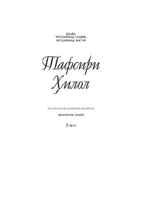

THQur'on oyatlarining islomiy tafsiri va izohlarini o'z ichiga olgan asar.
Bu kitob 'Tafsiri Hilol' asarining ikkinchi qismi bo'lib, Qur'on oyatlarining tafsiri va izohlariga bag'ishlangan. Unda oyatlarning ma'nolari, diniy hukmlari va islomiy ta'limotlar batafsil yoritilgan. Asar musulmon kitobxonlar uchun mo'ljallangan diniy-ilmiy manba hisoblanadi.